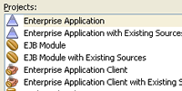
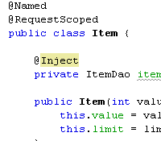
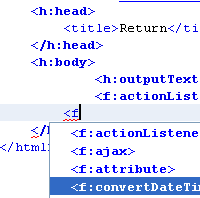
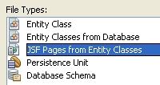

Click image for fullscreen preview
Click image for fullscreen preview
Develop portable, robust, scalable and secure server-side Java applications. Java Enterprise applications are deployed to servers and can be accessed through a web browser.
Full Support for Java Enterprise Edition 6 The NetBeans IDE provides complete support for
the latest Java EE 6 standards, including JSF 2.1 (Facelets), Java
Persistence 2.0 and Contexts and Dependency Injection 1.0, as well as
the Java EE 5, and J2EE 1.4 platforms. Use NetBeans IDE for
development with the Java Persistence API, servlets, JavaServer Pages
(JSP), Enterprise JavaBeans (EJB 3.1), web
services and other Java EE
technologies. Contexts and Dependency Injection (JSR 299)
|
  |
Server DeploymentThe IDE works with any standard Java Enterprise Edition (Java EE) container, and was tested with GlassFish Server Open Source Edition 3.1.2, WebLogic 12c and 11g, Apache Tomcat 7.0 and 6.0, JBoss 6.1, and others. JSF 2.0 DevelopmentNetBeans IDE supports Facelets, the official view technology for JSF 2.1. You can create a new web application project based on the Facelets framework and work with standard JSF reference implementation components. This includes a comprehensive library of JavaServer Faces components such as Table, Calendar, Tree, Tab Set, File Upload, and more. The IDE includes an editor for deployment descriptors
(web.xml files) and an HTTP monitor for tracking and debugging the data
flow between components of a web application.
The IDE also supports various JSF component libraries (PrimeFaces, RichFaces, ICEfaces)
that can simplify the development of facelet pages. JSF Code Generation and PalettesUse the JSF CRUD application generator (Create/Read/Update/Delete) to create a complete functional JSF page for manipulating data from a database. The New File wizard can generate customizable CRUD JSF pages from existing entities. Use the customizable HTML and JSF components palettes to drag and drop HTML and JSF forms into web pages and to generate JSF data tables from entities. The IDE now generates code using annotations instead of deployment descriptors where possible. Enterprise Java Beans (EJB) Development The IDE supports EJB 3.1 in web application projects.
The EJB project file wizard provides options for creating Singleton session beans
as well as Timer session beans for working with timed notifications.
You can use a wizard to easily create a Session Bean for an entity class including
the appropriate annotations and commonly used default methods.
Beans can be exposed with a local interface or a no-interface view. Java PersistenceThe IDE provides tools to work with the Java Persistence API 2.0. Wizards enable you to generate entity classes from a database, and a JavaServer Faces CRUD (Create Retrieve Update Delete) application from entity classes. The IDE supports all types of entity relationships (one-to-one, one-to-many, many-to-one, and many-to-many) and all types of primary keys (single-column, composite, and generated). The IDE also provides templates and graphic editors for creating and maintaining persistence units. JavaServer Pages (JSP) DevelopmentIn JavaServer Pages (JSP) files, the editor assists you with code completion, hypertext navigation, error checking, and debugging. You can also leverage the JavaServer Pages Standard Tag Library (JSTL). Deploy on SaveThe IDE instantly redeploys any running Java EE application when a change is made to the project. Deploy on Save is available for web, EJB and EAR applications, and supported for GlassFish 3.x, WebLogic and Tomcat (directory-based deployment is prerequisite). |
  |